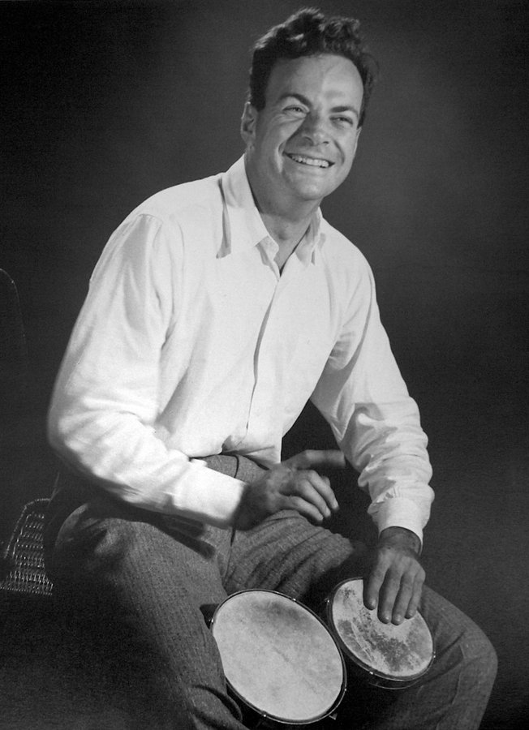

Part of the purpose of these recent re-runs is to consolidate the logical thread that leads to practical solutions to the difficult climate control problem in a more compressed form. Another motivation is to expand to alternative channels to get the message out, which is no easy task given the length of these installments (minutes) compared to the modern attention span (seconds). It’s also been more demanding than expected, primarily because each installment has to be summarized to fit the attention span.
As if on cue, one of the podcasts I listen to occasionally, Freakonomics Radio by Stephen Dubner , has started a three-part series on the late physicist Richard P. Feynman entitled “The Curious Mr. Feynman.” I’m a long-time fan of Feynman. In this episode, Dubner also interviews another hero of mine, science author Charles C. Mann .
Today, I encourage you to listen to the first episode here while I bring my various social media threads up to date. With the success of the Oppenheimer movie, I note that nepo baby Jack Quaid played Feynman. If you’ve seen the film, he’s the one watching the atomic test without protective glasses while sitting in the truck, fully confident that he’s shielded from blinding radiation by the glass in the windshield. He’s also the bongo player. If you haven’t seen the movie, you should.

To whet (not wet) your appetite, here’s a key passage from Dubner:
It strikes me there are a lot of lousy ideas floating around these days — but there aren’t many people who are both willing and able to shout them down. And by “able,” I mean taking apart a bad argument with the rigor of a scientist and the patience of a teacher. It’s the role filled by what we used to call “public intellectuals” — but, to be clear, Feynman would have hated that label. He didn’t really think of himself as an intellectual, and as much as he loved adventure and storytelling, he didn’t have much use for public attention.
I trust you’ll see the connection.
Until next time.